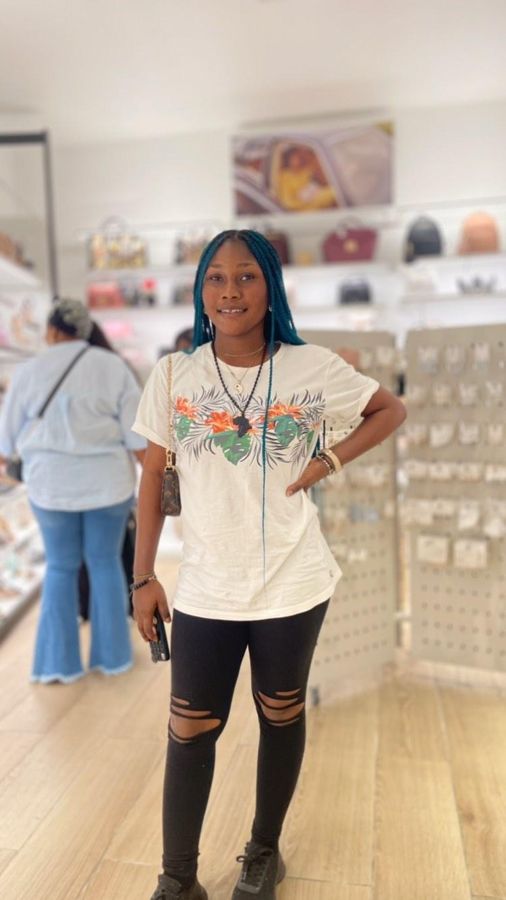
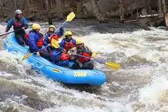

Our Mission
To offer safe, exciting, and environmentally sustainable white water rafting experiences that cater to adventurers of all levels, fostering a love for the great outdoors and creating lasting memories.
To offer safe, exciting, and environmentally sustainable white water rafting experiences that cater to adventurers of all levels, fostering a love for the great outdoors and creating lasting memories.
The Rapids was founded by Clara Rivers, a trailblazing adventurer with a deep love for white water rafting and the great outdoors. Clara's vision was to create a company that would empower people, especially women, to embrace the thrill of navigating untamed rivers. Starting with a single raft and an unyielding determination, Clara built The Rapids into a renowned name in the rafting world, known for its inclusivity, safety, and unforgettable experiences.
Over the years, The Rapids expanded its operations to include guided tours in some of the most breathtaking rivers around the world. From the roaring rapids of the Colorado River to the serene waters of the Zambezi, the company has brought the thrill of rafting to countless adventurers. Clara Rivers' passion for empowering others also led to the creation of training programs for aspiring guides, ensuring that the next generation of river enthusiasts could share her vision of safe and exhilarating adventures.
As the company grew, so did its dedication to giving back to the community. The Rapids partnered with local conservation groups to protect river ecosystems and launched initiatives to educate visitors about the importance of preserving natural habitats. Through these efforts, The Rapids has not only provided unforgettable experiences but also fostered a legacy of environmental stewardship and community engagement.